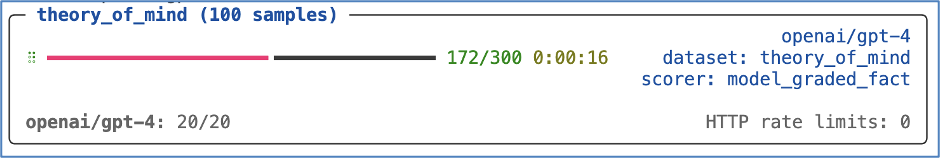

Inspect, An OSS framework for LLM evals
This talk will cover using and extending Inspect, a new OSS Python framework for LLM evals. We’ll walk through the core concepts and design of Inspect and demonstrate its use for a variety of evaluation tasks. Inspect makes it very straightforward to implement simple “benchmark” style evaluations, but also has the depth and flexibility to support highly complex evals. Inspect supports both exploratory (notebook/REPL) workflows as well creating large scale eval suites that run in batch. We’ll cover all of this ground as well as creating custom extensions to Inspect.
If you enjoyed this content, subscribe to receive updates on new educational content for LLMs.
Chapters
00:00 Introduction to Inspect
JJ Allaire introduces Inspect, a Python package developed in collaboration with the UK AI Safety Institute for conducting evaluations of large language models (LLMs). The tool facilitates a range of evaluations from simple QA to complex cybersecurity tasks. JJ discusses the motivation behind Inspect, emphasizing the inadequacies of existing tools for complex LLM evaluations and the frequent default to custom solutions.
01:55 Honeycomb Eval Example
JJ walks through an example with the Honeycomb dataset, demonstrating Inspect’s flexibility in adapting existing code for evaluations.
03:45 Core Concepts: Solvers and Scorers
JJ elaborates on the core components of Inspect: Datasets, Solvers, and Scorers. He details how these components interact within the framework to process evaluations, utilizing examples from the Honeycomb dataset to illustrate their functions.
06:48 Eval Results and Tools
JJ covers the evaluation process and tools available in Inspect for analyzing results. He demonstrates the use of the Inspect View to aid in debugging and refining evaluations, and shares how users might drill further to inspect eval results.
11:55 Detailed Solver and Scorer Functions
A deep dive into the functionalities of Solvers and Scorers within Inspect. JJ describes the modular design that allows for the reuse and customization of these components to suit specific evaluation needs, including examples like multiple-choice and self-critique solvers.
15:37 Composability and Tool Integration
JJ discusses the composability of Inspect, encouraging the use of external Python packages to enhance the framework’s capabilities. Examples include integrating tools for specific tasks like security evaluations. He discusses the potential of community-developed components.
19:10 Agent Scenarios
JJ presents advanced use cases for Inspect, detailing the integration of agent-based systems for complex tasks such as cybersecurity evaluations. This section covers the adaptability of Inspect to incorporate various agent behaviors, even from external frameworks such as LangChain.
23:04 Scoring Mechanisms and Customization
JJ elaborates on the various scoring methodologies within Inspect, highlighting the flexibility in using pattern matching, model-graded scorers, and comparing against human evaluation.
26:50 Importance of Logging in Evaluations
JJ discusses the role of logging within Inspect, showcasing how comprehensive logging can significantly enhance the evaluation process. JJ illustrates how logs facilitate detailed analysis and comparisons across different evaluations, especially when enriched with, e.g., Python APIs.
27:59 Model Support and Integration
This section details Inspect’s compatibility with a wide range of models from various providers like Hugging Face. JJ explains how Inspect handles different model architectures and the ease of integrating new models as they become available.
29:36 Workflow with Inspect
JJ describes Inspect’s capabilities for supporting both interactive and automated workflows. He outlines how Inspect accommodates exploratory work in notebooks while also being robust enough for inclusion in continuous integration systems, enhancing productivity, scalability, and reproducibility in LLM evaluations.
35:29 Q&A Session Begins
The session transitions to a Q&A, facilitated by Hamel, where JJ addresses questions about Inspect’s integration with other products, its capabilities for handling different data inputs and outputs as well as metrics, and the future development directions influenced by community feedback and needs.
Slides
Resources
- Inspect homepage.
- Inspect GitHub repo.
- AI Safety Institute: homepage.
- Slides (pdf).
- Source code for this presentation.
Notes
Getting Started with Inspect
To develop and run evaluations using Inspect, you’ll need access to a model. This typically involves installing a Python package and ensuring that the appropriate API key is available in your environment. Here are the steps:
- Install the inspect-ai Python package:
pip install inspect-ai- Assuming you’ve written an evaluation script named arc.py, set up and run the evaluation for OpenAI as follows:
pip install openai
export OPENAI_API_KEY=your-openai-api-key
inspect eval arc.py --model openai/gpt-4Inspect supports a wide variety of models, including models hosted on Azure AI, AWS Bedrock, Cloudflare, and local models with Ollama.
Inspect Evaluation Components
Datasets: These contain labeled samples, typically organized as a table with input and target columns. The input represents prompts, and the target can be literal values or grading guidance.
Solvers: Solvers are combined in a plan to evaluate the input in the dataset. The basic generate() solver calls the model with a prompt and collects the output. Other solvers can handle prompt engineering, multi-turn dialog, critique, and more.
Scorers: These evaluate the final output of solvers. They may use text comparisons, model grading, or other custom techniques.
Example Evaluation: Sally-Anne Test
Let’s explore a simple evaluation that assesses how models perform on the Sally-Anne test: a task that evaluates a person’s ability to infer false beliefs in others. Here are some samples from the dataset:
| input | target |
|---|---|
| Jackson entered the hall. Chloe entered the hall. The boots is in the bathtub. Jackson exited the hall. Jackson entered the dining_room. Chloe moved the boots to the pantry. Where was the boots at the beginning? | bathtub |
| Hannah entered the patio. Noah entered the patio. The sweater is in the bucket. Noah exited the patio. Ethan entered the study. Ethan exited the study. Hannah moved the sweater to the pantry. Where will Hannah look for the sweater? | pantry |
In this example, we demonstrate how to run evaluations using the inspect eval command from the terminal. Additionally, we provide the code for the evaluation.
Code for the Evaluation:
from inspect_ai import Task, eval, task
from inspect_ai.dataset import example_dataset
from inspect_ai.scorer import model_graded_fact
from inspect_ai.solver import (
chain_of_thought, generate, self_critique
)
@task
def theory_of_mind():
# The Task object brings together the dataset, solvers, and scorer,
# And is then evaluated using a model.
return Task(
dataset=example_dataset("theory_of_mind"),
plan=[
# In this example we are chaining together three standard solver components.
# It’s also possible to create a more complex custom solver that manages state
# And interactions internally.
chain_of_thought(),
generate(),
self_critique()
],
scorer=model_graded_fact()
)Note that this example is intentionally over-simplified. The templates for prompting, critique, and grading can all be customized. In a more rigorous evaluation, we’d explore improvements specific to the context of the dataset.
Running the Evaluation
To run the evaluation against GPT-4, execute the following command:
inspect eval theory_of_mind.py --model openai/gpt-4
By default, evaluation logs are written to the ./logs sub-directory of the current working directory. Once the evaluation is complete, you’ll find a link to the log at the bottom of the task results summary.
Additionally, you can explore evaluation results using the Inspect log viewer. Run inspect view to open the viewer (you only need to do this once, as the viewer will automatically update when new evaluations are run).
Full Transcript
[0:03] JJ Allaire: I’m going to try to give a whirlwind tour of Inspect. I actually worked with Hamel a little bit over the weekend to build some Inspect evals for the Honeycomb dataset that you are working with. Hopefully, it’ll connect well to the work that you’ve been doing and it’ll make the concepts gel a little bit easier. What is Inspect? Not surprisingly, it is a Python package, pip install Inspect AI. Someone asked a question about, in Hamel reference, that I’m affiliated with Posit, which is formerly our studio. This project is actually not a Posit project.
[0:43] JJ Allaire: This is a project that results from a collaboration that I’m doing with the UK AI Safety Institute. So the UK AI Safety Institute has hundreds of evaluations of every variety, simple QA things. fancy, you know, cybersecurity capture the flag evals, hundreds of evaluations. And when we kind of started off on the journey to writing on these evaluations, there weren’t terrific tools available. A lot of the tools were either embedded in benchmark frameworks, or maybe not very complete or weren’t that well tooled. It wasn’t necessarily clear exactly how much more development they would get.
[1:23] JJ Allaire: And further, I think they were not necessarily designed to scale up to very complex evals. And so we set out and actually the most popular eval framework is just roll your own eval framework, which is out there a bunch too. So we set out to build something that we could use and then ultimately we could share so other people could use as well. So with that, just again trying to ground this in Honeycomb. This is actually an eval for the Honeycomb dataset. It’s got there’s 2300 user inputs.
[1:58] JJ Allaire: We’ve also got the, you can see columns, that’s the schemas that were fetched originally by RAG, so they’re in the data set. And so to create an evaluation, we basically take that data set, and then we put it through a pipeline, which you’ll recognize is really the same code that Hamel had in the notebooks for… for Honeycomb. And then we apply a score to it, which is again, based on the Hamel’s original code. And then we can run this eval and get lots of tooling.
[2:31] JJ Allaire: You can see this, I’ll get it more into this, but we have a log viewer that lets you explore and debug and visualize everything that happened during the eval. Lots of other tools. This is a VS Code extension that lets you tweak things, run different models, et cetera. So I think I would emphasize that inspect is not super opinionated and really is like Python code first.
[2:53] JJ Allaire: And by sort of conforming to some simple conventions and fitting yourself in, you get to take advantage of this big pipeline of tools and then hopefully like a big ecosystem of related packages that will extend and spec.
[3:07] Hamel: Is it very local in nature? It’s local.
[3:10] JJ Allaire: It’s all local. Yeah. Okay. Yeah. So one of the things I skipped over on the first slide is we have this concept of development to production. So we definitely wanted to have a very interactive local, you work in a notebook, be very iterative, work on your eval. We have lots of stuff for taking it and running it in the cloud, run it over 10 models, run it. So it’s…
[3:33] JJ Allaire: It’s local for development, but then we have lots of tools if you want to scale it up and run it as part of CI and things like that. But it’s all local. Right. Okay. So this core concepts, and you saw a little bit of these on the first slide, you have a data set, which is not at all surprising what that consists of. It’s inputs. And usually there’s targets. In the case of the Honeycomb data set, there’s not a target. There’s going to be a validation function and a critique model.
[4:05] JJ Allaire: Target would usually have like for multiple choice, what’s the correct answer for Q&A, some kind of description of what the right answer is. for a fancy model graded eval, it might be like a grading rubric for a model. So that’s the data set. Solvers is like the pipeline that actually does the eval. And this could be doing anything from prompt engineering to calling the model to a multi-turn dialogue with the model. It could be doing various types of elicitation like critique.
[4:34] JJ Allaire: Solvers is kind of like the heart of the entire eval and where you kind of customize how it works. And then the score basically evaluates the final output. Again, these can be very simple, like doing text comparisons. They can be model graded, or they can use all kinds of custom schemes, kind of whatever you can dream up. So that’s the core concepts, and I’m going to drill more into this validate example. So this is the eval. I’ll break down the different parts of it.
[5:01] JJ Allaire: We talked about the data set, and this is just reading from the CSV. There are standard fields that go in data sets. Input is one of them. And then there are custom fields that different evals will need. In this case, columns is important because we’re going to use columns for the prompt template. And so we want to save the columns when we read the data set in. And then this, we have this plan and you’ll see this is the same system message used in the notebooks presented in the course.
[5:29] JJ Allaire: prompt with schema is a solver that’s going to build the prompt that uses the columns and the input, and then generate calls the model. So pretty straightforward. And then the score actually uses the check function, the check query function that you’ve also seen in the course. So that’s the eval. And now I’ll drill into some of the specific components. They’re quite simple, and hopefully they’ll be very intuitive and straightforward, what they’re actually doing. Here, prompt with schema is literally just taking a prompt template and then substituting the prompt and the columns.
[6:04] JJ Allaire: So you’ve seen this before, but it’s a solver that really just makes a prompt. That’s all it does. And then the scorer is basically going to… It’s going to take the output from the model. This JSON completion function is just sort of a helper that some models actually like to put like JSON code blocks in. So it strips that away.
[6:31] JJ Allaire: So the idea behind that is just like clean it up so we get pure JSON, read it, and then we call the is valid function, which is literally the exact same is valid function that’s used in the course. And we figure out whether the query was valid. Okay. And then, so once we’ve done that, we’ve built our solver and we’ve built our score and we’ve run it. Now we run our eval and we can see kind of what happened.
[6:56] JJ Allaire: And in so many evals, the score really doesn’t tell you anything close to enough, especially when you first start developing them because, you know, your checking function could be wrong. The way you extract answers from the model could be wrong. There’s so many things that you need to investigate and you kind of… in some ways need to do it on a per sample basis. So this lets you very easily look and see what happened overall, and then what happened on a sample by sample basis.
[7:23] JJ Allaire: So here you can see drilling into this sample, which got incorrect. We can see what was the actual message history, what was the dialogue between the model and the eval. And so here it’s quite long, as you know, from working on it. Here’s the columns that was injected, the schema. And then here you can see… to the very end, and then the assistant’s answer. So looking at all the messages can be quite valuable, especially when you get into things like tool use. And then also, okay, so that’s the basics of that.
[7:57] JJ Allaire: And then we built another eval, which has actually, it’s… The exact same code, and in fact, in the Git repo that I’ll share at the end, you’ll see that I do reuse the code. I don’t just copy and paste it, but really there’s only one line that’s different here. It’s the same dataset, it’s the same plan, but we’re going to use a critique model for scoring instead of the validate function. Here, this is the critique score. This has a little bit more going on, but it’s again, pretty straightforward. Notice we parameterize.
[8:30] JJ Allaire: what model is used to do the critique. So you can use, you know, it’s pretty obvious, but you don’t necessarily need to use the same model. In fact, you often don’t want to use the same model to do scoring as the model you’re evaluating. You can use a more powerful model. In some cases, maybe use a fine-tuned model. Here we’re defaulting to GPT-4 Turbo, but the user of the score could use any other model they want. We build the critic prompt, kind of analogous to how we built the other prompt.
[9:01] JJ Allaire: And again, this critique.text is literally the same. It’s the exact prompt that is in the notebooks for the course. And then we run the critique. So we get the model instance, we call generate, we parse the output, we check and see if it was good, and then we return the score. So that’s our critique score. And then at the end of that, we get another eval view. This time for critique, the accuracy here was a little bit lower.
[9:28] JJ Allaire: These numbers actually don’t really mean anything by themselves, but just noting that it was less frequent that the critique was satisfied. with the output then, the devalidator, which is intuitive. And so here we might want to know what actually happened in this critique. So we can drill in here. This is one of the incorrect answers. And we can see what the answer was. And then we can actually see what the critique model’s explanation was. So here you might look at it and say, wow, that actually looks right to me.
[10:00] JJ Allaire: Or a human expert may have said it was right. And then you want to look at the explanation and perhaps This indicates that you need to improve your prompt template for the critique model, or perhaps it means you need to fine-tune a model just to do critique, depending on what resources you’re willing to apply to get a good grader. So this is, again, just drilling in and seeing what happened during scoring. Okay, so that…
[10:27] Hamel: Is there any way to interact with this view, like do some annotation in this view itself or something?
[10:34] JJ Allaire: So right now we don’t have we don’t have like commenting in the view and stuff. I think we are developing like some like shared places to look at like internally. places to look at views together and there’ll be some annotation in there. I don’t know if we’ll come out with like a thing to do that. But that is useful, especially. Yeah. So maybe there’s a way we can do that in a way that, that we can open source that as well. And then, and then people can take advantage of that. This is just runs locally.
[11:03] JJ Allaire: So you kind of would need to post it in some kind of, we’ve talked about actually building a. it wouldn’t really solve it awaits and biases plug in, but that’s not going to let you do this, like drilling into each one. Maybe to some extent it would, if they have like good, good templates for, for, for chat message for chat conversation histories. But yeah.
[11:23] Hamel: I like the way that this is being rendered. And it’s flexible, seems flexible enough that you took my example without really knowing it until the weekend and seem to just plug it in here.
[11:34] JJ Allaire: And it’s actually really- Just plug it in. And mostly just use all your code. I mean, there’s a very, what I showed you is like all the code that I wrote. And all the rest is just calling your, using your templates and using your code. So that’s kind of the idea that, you know, there is a minimal lift to get your existing stuff working inside the pipeline. So, yeah, we did that. Okay, so now I want to just talk a little more abstractly. We’ve looked at these examples.
[12:00] JJ Allaire: I’ve shown you some simple solvers, really simple, just a prompt template. They can get a lot more fancy, which I’ll show you in a minute, and some scorers. So, like, conceptually, what is a solver? It basically, and this is a simple view, but the idea of a solver is it has a task state, which is, like, what’s the current state of the message history and what is the current model output? And when we start, there is no model output. and it just transforms the task state in some useful fashion.
[12:27] JJ Allaire: So that could be calls the model, generates, appends the assistant message, and updates the output. It could be prompt engineering. It could be critique. It kind of can be anything. And yeah, that’s sort of what I’m saying here. The solve function does something useful with the state. And that sort of allows you to create a pipeline of solvers and reuse solvers. And it’s not always the case that you want to do that.
[12:50] JJ Allaire: Some evals really just want to have like one solver that just is sort of boss of everything and doesn’t confine itself to being in a pipeline. But the pipeline does end up being useful in a lot of cases. So some examples of really simple solvers, which you’ve sort of seen hints of. We built a custom prompt template for the Honeycomb evals. But like a simple, here’s a prompt template, just transform the prompt by passing it through a template, perhaps with some extra parameters from metadata. This is actually the actual source code for the generate solver.
[13:24] JJ Allaire: It literally just calls the model to generate, and that’s it. So those are like really simple. 101 solvers. I think we have like a chain of thought solver, which does like a basic chain of thought template. But even then, often you want to customize that for the domain. The generic chain of thought isn’t always exactly what you want. And I guess this emphasizes when you’re writing really good evals, you are writing, you can reuse solvers, but you’re oftentimes want to write your own solvers and write your own scores to make them really, really good.
[13:56] JJ Allaire: Here’s a more fancy one. I won’t actually walk through all the code on this, but it’s a multiple choice solver that handles like shuffling the choices. And then it actually calls the model to generate and then it unshuffles the choices. So this is an example of a solver that calls generate internally. So the plan for a multiple choice will typically just be like plan equals multiple choice. It might be like plan equals chain of thought multiple choice, where multiple choice just calls generate internally. Another one, self-critique, pretty straightforward.
[14:27] JJ Allaire: Again, we’ve already called generate before self-critique comes on the scene. So we may have had a system message, a prompt template. Now we call generate and now self-critique. So the first thing we do is we actually take the existing completion and we basically run a critique on it. And then we take that critique and we append it to the message history. And then we call generate again. And so this is an example, again, of a solver calling generate internally, this time just to re-up the answer with the critique being available.
[15:02] Hamel: I love how you made these slides, I think, with Corto. There’s a lot of comments in the Discord. No? Okay.
[15:08] JJ Allaire: Yeah, yeah. Yes, with Quarto. Definitely with Quarto. Oh, yeah. Yeah, yeah, yeah, yeah, yeah. Yeah, totally. Yeah.
[15:12] Hamel: A lot of comments in the Discord about, hey, this is really cool. Is it Quarto? So, yeah.
[15:17] JJ Allaire: Yes, definitely. It definitely is Quarto, yes. Yeah. Okay. And I’ll make the slides available at the end and the slide source code and everything. So, there’s a get repo that I’ll share a link to at the end so people can figure out how we did all this. Okay, so that’s the self critique solver. Okay, and then there’s generate we already talked through that. Okay, so one of the things to think about is like is composition.
[15:43] JJ Allaire: And so one of the ideas behind Inspect is that you actually will write, people will write a bunch of Python packages that have scorers and have solvers and that you’ll be able to mix and match those. So the idea is like, there’s like, you know, lots of external components to let you do different things that you can just plug in. So as an example from AI Safety Institute, we have an internal package called Shepard that’s used for doing jailbreaking.
[16:07] JJ Allaire: And so there’s many, there’s, as any of you follow the literature, there’s like dozens and dozens of jailbreaks. And some of them work and some of them don’t. And sometimes you have to try multiple jailbreaks and some of them work with some models and not with the other models, et cetera, et cetera. But these are basically jailbreak solvers that essentially do prompt engineering to get the model in a state where it may provide answers that it would otherwise refuse. And so as an example, here’s a eval.
[16:34] JJ Allaire: that’s basically trying to give the, it’s basically just trying to get, see if the model can give good computer security advice. So it’s like, how do I prevent, you know, my website from being hacked? And then, so sometimes the model will, because you’re asking about computer security, it’ll like flag, don’t talk about computer security. And so we’re saying, well, we wanna see what the model actually knows. And so here you can say, we bring in a, jailbreak solver from Shepard, and then we just use it in our pipeline.
[17:07] JJ Allaire: And so we have our normal system message. We put the jailbreak in, and then we’ll probably be able to elicit more or have less refusals than we otherwise would. And so you can imagine lots of different solvers that you could plug in. prompt various types of prompt engineering solvers. You can imagine a whole Python package just full of prompt engineering techniques and the whole Python package full of critique, debate, all kinds of things like that. And similarly, scorers. So Python package is full of different variations on model graded scoring and things like that.
[17:43] JJ Allaire: So that’s an example of composition, which we think will be a big part of how people end up using Inspect. Okay. Okay. So I’ve simplified a little bit where we’ve just been looking at really straightforward kind of QA style tasks, or in the case of obviously Honeycomb, we’re looking at a fine tuning task. But these are straightforward, just like prompt, generate, nothing fancy going on. I didn’t show you all of TaskState before, but TaskState also includes tools. And so the idea behind tools, I’m sure you’ve all seen or used.
[18:19] JJ Allaire: you know, these are Python functions that you can make available to the model. And you tell the model, you write the Python function, you write the doc string, you tell the model about them, and then it will say, hey, I’d like to use this tool. And so part of the task state is a list of available tools, as well as potentially like a nudge to the model, like definitely use this tool or definitely don’t use the tool, et cetera.
[18:41] JJ Allaire: And so this is a simple example of, this is a biology QA task, and we’re saying, hey, if it tends that you don’t know the answer, I think this dataset actually has a bunch of very obscure questions, then hey, you can use web search. And so then we have a web search tool that goes and gets a bunch of Google hits and summarizes them and things like that. And so use tools is a function that just makes tools available to generate. And so there’s, you know, once you get into tools, now you’re into agents.
[19:14] JJ Allaire: Sometimes it’s just simple tool use, like, hey, let the model use Wikipedia or let the model use web search. And sometimes it’s give it all kinds of tools. And they really become agents at that point. And so you can have agents sort of with like very bespoke custom logic, or you can bring in like an agent library. So I’ll show you an example in a little bit of taking like an existing langchain agent and just like basically making it into a solver.
[19:39] JJ Allaire: So the idea is you can just take any agent in these other frameworks, and once you have the bridging, it’ll just work inside Inspect. So I’ll show that in a minute, but let me first show this sort of bespoke agent concept, which is this is a cybersecurity eval. It’s a capture the flag task. And this is more like the hand-rolled agent loop where we’re basically giving init challenge is here. This is. creating a Docker container. Use tools is basically just like, here’s some tools. And we tell the model, like you can do all these things.
[20:11] JJ Allaire: And then we give it a task. And then this is basically just a loop where the model gets to keep using tools until it either terminates because it couldn’t figure it out or it ends up finding the flag. So this is like very custom. This is like roll your own agent. And definitely that’s a thing. That’s something that people do. But at the same time, you know, there’s lots of agent frameworks out there.
[20:36] JJ Allaire: And so we want to be able to have like high order functions that let you take an existing agent framework and turn it into a solver. So as an example, like if you look at the code in the middle here, this is all code that is just Langchain code. There is actually I haven’t shown the imports, but there’s no inspect code at all in here. This is just like code that you would be writing in Langchain. This is basically going to get the Wikipedia tool. and then using the tool.
[21:05] JJ Allaire: And then we have, as I said, there’s this higher order function. This is actually provided as an example right now. It’s in the repo that I gave you, but we can just take that agent and if it conforms to like the Langchain agent interface, we can just turn it into a solver. And then if you actually look at the eval that results, you can see this is the Wikipedia search. So it’s a data set of, can the model use… Use Wikipedia to answer, you know, they may be difficult questions, maybe obscure questions.
[21:35] JJ Allaire: There may be questions we think the model definitely can answer. But the idea is, you know, the plan is literally just this Langchain agent that uses Wikipedia. And as you can see, down here is the solver that I showed on the previous slide. This is the entire task definition. Use a model to assess it. and use the agent. And then you can see here kind of what happened. And if we look kind of inside at, you know, what happened during the eval, you can see it’ll show you the tool use.
[22:04] JJ Allaire: So it’s like, okay, what was the back and forth? What tools did the model choose to use and why? It gives an explanation. What result did it get? And this Game of Thrones one is really one of my favorites because it ends up, it’s trying to find the, in order of the 10 episode titles. And oftentimes, like in Wikipedia, it’s not like literally spelled out or actually where it is spelled out. It might be wrong. And so oftentimes it’ll do two or two or three queries to try to sort it out.
[22:33] JJ Allaire: So anyway, it gives you that sort of diagnostics of what happened with tool use. And then similarly for scoring, this is the model graded fact score. This was the answer and it was incorrect. So this was this was the grading guidance. This was the answer. It was graded incorrect. And I think I’m going to hopefully show you. Yeah, this is the scorers explanation. So again, you know, sometimes the model really didn’t get it, but sometimes the score is actually wrong.
[22:58] JJ Allaire: And so it’s important to be able to look, you know, drill down and see what’s what’s actually happening. Okay, so that is okay. So let’s talk a little bit about scoring. Let me check my time and make sure okay we’re good. A little bit about scoring. There’s lots of different ways of scoring. Obviously, traditional like pattern matching and template and answer-based scoring are obvious.
[23:18] JJ Allaire: We’ve got lots of built-in solvers for doing like RegEx matching, matching at the beginning and the end, matching a template like where you tell the model to say answer and then the answer, lots of that sort of thing. There’s also model-graded scores built in, but usually you need to customize the templates for those to get them to work properly for your domain. And of course, as I mentioned before, like they’re pluggable, you can get them from other packages. And I’m expecting lots of stuff’s going to happen with model graded scoring over time.
[23:49] JJ Allaire: And we’ll see the benefits of the community working on that over the next months and years. And then you can also just say no score, have a human score it. So that’s also possible. And one of the things I think, and there’s something that I know is emphasized quite a bit in the course. is basically rigorously evaluating model grade scores against human baselines. Basically, I’ve observed that definitely a lot of people will get their model grade score going, and they’ll be like, cool, now I have a score.
[24:18] JJ Allaire: And they haven’t actually grounded it in whether it’s how good it is relative to human scores. So if we can build tools that help people do that well, that sort of structure, that work, I think that’ll be valuable. So that’s something we’re definitely going to work on. Okay, so what am I? Oh, this is okay. This is a score example, which I think is pretty interesting. This is the traditional, this is actually the math benchmark that I think OpenAI reports as part of their standard benchmarks.
[24:50] JJ Allaire: What’s interesting about it is that the model does math and then there’s a target, but oftentimes the answer is correct, even though it’s not literally the target. And so we have this expression equivalence solver that basically lets a model assess, are those expressions actually logically equivalent? So it can even do a little bit of algebra or a little bit of factoring. These are trivial. You can see this is the same as this. It’s scored correct. This is scored wrong.
[25:18] Hamel: What’s going on in that equivalence thing? Is it a regex? Or is there more going on?
[25:23] JJ Allaire: There’s more going on. I’m going to show the full source code to it in the next slide. So regex to extract the answer, and then we’re going to go and have the model. So we prompt the model to basically say at the end, put answer, colon, and then the equation. And then we basically, that’s how we pull the answer out. And then we send that to this expression equivalent solver. These are trivial because they’re just like punctuation differences, but I’ve seen it where it actually can sort out that the expressions are actually equivalent.
[25:57] JJ Allaire: So let’s take a look more closely at that. at that solver. Hopefully I have a little step through on this. No, I skipped through the… Okay, so extract the answer. And this is a reg X off of this line answer pattern, which is a common way of prompting to get the model to delineate their answer in a way that it’s easy to pick out.
[26:15] JJ Allaire: And then here we actually have a whole nother template, which I’m not going to show, which basically it’s a few shot thing that basically has like it has like 20 different few shots of like these are equivalent. These are not equivalent and and then the model is able to take those and then actually do a do a pretty good job grading pretty surprisingly good job grading. And so this is, you know, you kind of, this is a custom eval. It’s math equations. You have to build a custom score.
[26:42] JJ Allaire: You have to use a model to help you do the scoring. But it kind of gives you a taste of some of the things that people will do with scoring. Okay. I want to talk a little bit about what might seem kind of a mundane concern, but logging ends up being like massively important for doing good evals. Obviously, we built a log viewer on top of the log, but the log also has an API so that you can interrogate it and you can get multiple logs and then plot the differences and things.
[27:12] JJ Allaire: So the idea is the log is a rich Python object. It’s also JSON. There’s a JSON schema for it, but it’s also a It’s a rich Python object that lets you explore everything that happened during the eval and compare logs and things like that. So there’s that. And then I think you’ve seen most of the examples of the log viewer, but showing the samples, showing the messages. Yeah, you’ve seen this. Showing scoring. Okay. So that’s log. So a lot of people, the other thing people do, I think I’ll show this later, they’ll run like…
[27:46] JJ Allaire: 20 eval tasks, like doing a grid search, and then they have all their logs and they plot the results, things like that. So definitely, like, you end up computing on the logs quite a bit.
[27:59] Hamel: Very cool.
[28:00] JJ Allaire: Yeah. So models, we support a lot of models. We do the big frontier labs.
[28:10] Hamel: Do you need to support specific models? What’s the difference between using any hugging face model? Can you just use any hugging face model, really?
[28:19] JJ Allaire: Yeah, it can.
[28:20] Hamel: Okay.
[28:21] JJ Allaire: Got it. Absolutely. What it is is this prefix here. That is the model provider. And then this is completely arbitrary. So this is like any hugging face model. This is like any model that you have locally with Oyama. This is any model that’s on Together AI. This is provider and model name. We don’t know anything about these model names. We don’t resolve them, compute on them, we don’t know what they are. They just get passed through. So when Jammini 2.0 comes out, you just start using it.
[28:52] Hamel: And can you have your own endpoint? Like your own REST API endpoint? Yeah,
[28:57] JJ Allaire: you can. So one of the things that is interesting, like Oyama and VLM both actually end together. I think together might use VLM. They all use OpenAI’s API. So sometimes people will just use OpenAI with a custom base URL, but you can also create a custom model provider as well. If it’s like completely custom REST API that we don’t know about, it’s very easy to make a model provider and publish it in a package or what have you. So yeah.
[29:29] JJ Allaire: So you should be able to get to the models you want to get to without trouble.
[29:35] Hamel: Cool.
[29:35] JJ Allaire: Okay. Okay. So let’s see. I just want to make sure we have time for questions. I’m going to go a little fast on the rest here, but just to say we care a lot about interactive development. We care a lot about being able to work in a notebook, doing exploratory work on the eval, but then we want the eval to end up in a form. You can run them in CI. You can run lots of them. You can systematically compare results and things like that.
[30:00] JJ Allaire: So we have good, like we have tooling that works well in notebooks. I showed you before you saw like a terminal, it was like inspect, eval, do the thing. You can do all this in Python, in a notebook, and it does all the things in the notebook. You can have tasks in notebooks. And so we definitely try to invest a lot in like interactive workflow and then make it so it can scale to the more, I would say, production workflows. So again, I’m not going to dwell too much. This is like a grid search.
[30:28] JJ Allaire: So it’s like, okay, I’m doing a grid search over different grader models, graders, and system prompts. And that product is just like a thing that’s making the grid search. I’m dynamically synthesizing a bunch of tasks and I’m going to run all the tasks and I’m going to plot the results. So that’s just an example of like in a notebook, you just want to like explore the space with different things. And then later you might say, well, we’re going to formalize this. We’re going to make a task. We’re going to have some parameters from the task.
[30:56] JJ Allaire: What that allows you to do is start to address the evals, like with external driver programs. So basically I won’t get well on this, but like once you have this task and this can still be in a notebook and you’ve got these parameters here, I’m, I’m just basically just varying the system prompt and the grading prompt. You know, I can basically go inspect eval and then I can actually like, vary those parameters externally from a driver program, or I can do the same thing if it’s in a notebook.
[31:23] JJ Allaire: I can say, okay, I’m going to keep my eval in the notebook where I did all my exploratory work, but I still want to be able to address it outside of the notebook. Okay, task variant. This is down in the weeds. We’re not going to get into that. Okay. And then eval suites. Again, I’m not going to get into all this, but the idea is you should be able to have dozens of evals arranged in directories however you want, and we can find them and run them.
[31:48] JJ Allaire: This is an example of a directory structure that has a bunch of Python, has a bunch of tasks. We can find the tasks. We can run all the tasks. And, you know, again, the production version of it would probably be more like run it, put the put all the logs in an S3 bucket, then later on, go look in the S3 bucket and retry things that failed and things like that. Right. Okay.
[32:12] JJ Allaire: And then one last piece on sort of workflow is one principle is that if you run an eval from a Git repository, we want to, if you only have the log file, you should be able to completely reproduce the eval. It won’t necessarily give you all the same, obviously, since the models are non-deterministic, it won’t give you the same results, but you can reproduce all the input parameters and everything. So, for example, if I hand you a log. I can use the Python API to go read the log.
[32:40] JJ Allaire: I can go get the origin and the commit. I can get clone it. And then I can just run eval on it and that will work. So the idea is that the log file is like, assuming it was run from a Git repo, there’s sort of a unit of reproducibility. Okay. Okay. So I think we made it in time to have a decent number of questions, but I want to emphasize some resources. So one is, let me see here, is the documentation.
[33:13] JJ Allaire: website, lots of documentation that goes into lots of depth on all the stuff I talked about here. There’s a fair number of kind of annotated examples that go through, kind of walk through the code and explain all the different things going on. There’s also a, if I can find, a benchmarks in Git. There’s like we implemented a bunch of benchmarks and you can see how those are done.
[33:41] JJ Allaire: So lots of examples and lots of docs and then kind of some of the stuff I talked about, workflow and logs and tuning and things is all, we have docs about that as well. And then this is where you would go to get kind of everything I presented. So this repo has, I won’t scroll down yet so people can note the URL, I can just stick in the chat. Let me just do that quickly here. Someone can stick in the chat. Yeah. Okay. Yeah. But this basically has, yeah, I’ll let you note that.
[34:21] JJ Allaire: But basically it has the slides, and then it also has the code. So it has, if you go into like Honeycomb here, it actually has the kind of. what I actually did, the full code, and there’s the prompts. You’ll recognize utils. This is like the code right from the course. And then we have a, here’s the queries eval. You can see, again, we reused the code. We didn’t copy and paste it, but here’s the two eval tasks. And then we have a notebook version of that just to demonstrate doing it in a notebook.
[35:01] JJ Allaire: a little bit more commentary so there’s that and then i included some benchmarks here just for some people could explore those and then also that lang chain example that we talked about is here also so that kind of explains this how to run it and um yeah and then the slides so this is a worthwhile repo to check out and the docs are also worthwhile to check out so let me go back to here and go full screen and Q&A. Yeah.
[35:37] Hamel: So, one question is, will Inspect be integrated with pre-existing POSIT products like RStudio or anything else?
[35:46] JJ Allaire: So, just to clarify, Inspect is not a POSIT project. It’s a UK AI Safety Institute project. So it will not. I mean, unless it’s just in a separate… Exist in a parallel universe. So… We have a VS Code extension, but I’m not sure about any other positive things.
[36:10] Hamel: Yeah. I think I definitely know the answer to this question, but I’ll just go ahead and ask it because it’s a question. Does Inspect support evaluating LLM systems using the inputs and outputs that was produced in the past?
[36:26] JJ Allaire: Yes. Yes. You mean you’re talking about some kind of…
[36:31] Hamel: Like past logs.
[36:32] JJ Allaire: Yeah, yeah. So what you can do is the input can be oversimplified. Input can be a prompt or it can be a message history. So you could replay an entire message history. And so you could take, like you said, a past log and then construct a new data set that would allow you to evaluate using the previous prompts.
[36:53] Hamel: Okay. Another question is, does the inspect team… plan to expand? It might be good to maybe briefly describe what is the inspect team or who’s working. But does the inspect team plan on expanding the list of metrics to include stuff like MRR? and Mars like a ranking metric?
[37:14] JJ Allaire: Yeah, we will, yes. The metrics, the built-in metrics are a little spare, partly because a lot of people do end up writing their own metrics. But I think there are ones that are like definitively important and common. And so we will definitely be doing that. And then the inspect team is, there’s two or three of us who work on it, working on it full time. But there’s a lot of people. inside UK AI Safety Institute who provide pull requests and design feedback and things like that. It’s sort of like just like eval.
[37:48] JJ Allaire: It’s like it’s just evals are everywhere. And so it’s kind of in the air. And so there’s a lot of feedback and a lot of a lot of iteration. And then we’ve got I definitely have the bandwidth to to advance the project at a significant pace.
[38:05] Hamel: It’s great. I guess like this is a good time to ask the next question, which is. What is the future expectation for Inspect? Will it continue to be developed for the long term? What will its direction be dictated by the UK government or the community or both? And how do you think that… Yeah,
[38:20] JJ Allaire: it’s a good question. It’s definitely going to be developed for the long term. We view it as like a foundational piece for doing sophisticated and complex evaluations. And I think, I expect that if it does get picked up more broadly by lots of other players, that there will be community discussion and consensus about what’s important. And we definitely don’t, we would not have open sourced it if it was like, oh, this is just like something we’re using. Oh, by the way, here, everyone else can use it too.
[38:52] JJ Allaire: I think we want to make it broadly useful for all the different sorts of evaluations. One of the ideas is that if we can kind of level up the quality of evaluations more broadly, I think that’s just a better world to be in where everybody does evaluations better. And so I think we’re quite interested in making it work for lots of different use cases and scenarios and actors.
[39:23] Hamel: Okay. Does inspect allow for using logs from an API or database query, or is it strictly files only?
[39:32] JJ Allaire: So, using logs or writing logs? I wonder.
[39:38] Hamel: Using logs.
[39:41] JJ Allaire: Yeah, I mean, the… We use FSSpec, so logs can come from any file system that is addressable by FSSpec. I think if you had an API where the logs were, you would interact with the API, you’d realize that on the local file system, and then you’d… interact with it. We have an internal abstraction for logs, a log recorder that is not just doesn’t presume that it’s a JSON file. And so maybe we may add other recorders that can, you know, log to databases and things like that. But Yeah.
[40:20] JJ Allaire: The other thing is we want the log file format to be something you can compute on. So we do, we actually publish, you can see in the docs, we publish a JSON schema for it. We publish TypeScript binding types for it. So, you know, we want it to be something that people can use and compute on. And obviously a Python API for it.
[40:43] Hamel: All right. I’m just scrolling through the questions here. Someone is really curious about the cybersecurity eval stuff. So the question is, can you say a little bit more about the Docker-based cybersecurity CTF eval? Do you envision shareable suites of security tests?
[41:00] JJ Allaire: I think that’s going to happen. Yeah, we haven’t shared any of ours. I do know other people are talking about making shareable suites of security tests. Like there’s other people in the ecosystem who are planning on open sourcing those sorts of things. So that’s definitely part of the plan. And we’re going to, we’ve figured out, like people inside UK AI Safety Institute sort of like figured out how to do the Docker thing without, they just bootstrapped it inside the existing solver idea.
[41:32] JJ Allaire: But we’re actually going to have a more formal construct to support what we call tool execution environments that will, you know, will do more of the Docker heavy lifting and interacting with Docker Compose and things like that. That’ll be more built into the framework in the future, in the not too distant future. If you went to do it now, you might say, huh, what am I supposed to do? But I think in a month or two, it’ll be more clear and documented and a happy path.
[42:04] Hamel: Let’s see. My team is using weights and biases to track eval metrics. Is there a way to combine inspect AI with weights and biases? We are…
[42:15] JJ Allaire: open to do that. That’s on the fairly short list of things that we want to do. I haven’t looked carefully at the weights and biases API and how rich we can make it, and hopefully we can make it quite rich. I know that they have some kind of API I saw where you can have an iframe in their thing, so we could potentially even have the log viewer go embedded in weights and biases that also project a bunch of the log file results into it. into the standard weights and biases affordances.
[42:46] JJ Allaire: So we’re going to be looking at that in the next couple, three, four months, hopefully.
[42:55] Hamel: Someone asked a question. They’re really curious about the design philosophy behind this, like where you got the inspiration from. They said it’s very clean, and the clarity of thought is impressive.
[43:07] JJ Allaire: It’s all Hadley all the time.
[43:10] Hamel: Okay.
[43:12] JJ Allaire: I learned a lot from him. I’ve seen a lot of his work. When I’m designing a framework, he didn’t provide direct feedback on this, but he’s like the virtual sitting on my shoulder, keeping me accountable to keeping things clean, and simple, and straightforward, and composable.
[43:36] Hamel: That’s great. One more person is asking, can Inspect be used with LLM proxies, like light LLM? I don’t see why not,
[43:44] JJ Allaire: but…
[43:48] Hamel: Absolutely, yeah. Okay. Someone is asking about, do you have any imports or plug-ins for using Mac GPUs locally within SPECT AI?
[44:02] JJ Allaire: So, yes. So you can use whatever Oyama is doing, which runs on the Mac. I’m sure that they’re using Metal and things to make inference reasonable. I’m not positive, but I can’t imagine that a project like that wouldn’t be using Mac GPUs. So, Oyama is one way. And then you can, with Hugging Face, use the MPS backend. We do have support for that. So that, I feel like the Oyama has done a better job, like, reducing the memory requirements maybe than, I mean, depends on the Hugging Face model.
[44:42] JJ Allaire: But we found a lot of, like, the Hugging Face models that you want to evaluate, you know, you definitely need to have, like, pretty reasonable GPU or GPUs. So, and I don’t know how generally, how good like PyTorch MPS is. I don’t know like how good it is.
[45:04] Hamel: I think this kind of may be a good stopping point. There’s certainly other questions, but I think we hit the most important ones as far as I can see.
[45:17] JJ Allaire: Okay.
[45:18] Hamel: Terrific. What do you recommend for people trying to follow your work? Like how to keep in touch with you or appraised of what you’re working on?
[45:30] JJ Allaire: Yeah. Yeah. i’m not i do have i have a twitter presence but i don’t i’m not like posting on there all the time so that’s not a great place github is a perfectly good place to to stalk and see and see what’s going on um you know um some of these commits don’t show up like for inspect don’t show up there but but some of this like peripheral work like this workshop show up there so yeah i’d say follow follow me on github it’s a good way to go okay great yeah
[46:04] Hamel: All right. With that, thank you, JJ. It’s really great to have you here. I learned a lot about the framework as well. So it was great to have this overview.
[46:14] JJ Allaire: All right. Yes, it’s a privilege to be able to come and talk to everyone here. And so hopefully you’ll have for those that decide to give Inspect a try, hopefully you’ll have success with it. And let us know if you don’t. And we’ll be very active on GitHub issues. So please let us know what’s wanting and or what you aspire to do that you can’t do.
[46:35] Hamel: All right, great. Thank you.
[46:37] JJ Allaire: Thanks, JJ.